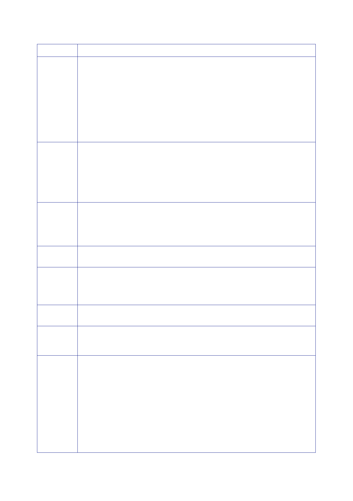

The Report
of the Iraq Inquiry
Country
Syria
Norway
Singapore
Colombia
Cameroon
Guinea
Mauritius
China
Extracts
from Explanations of Vote (EOV)
“Syria
voted in favour … having received reassurances … that it would not
be used
as a
pretext for striking against Iraq and does not constitute a basis
for any automatic
strikes
against Iraq. The resolution should not be interpreted … as
authorising any
State to
use force. It reaffirms the central role of the Security Council in
addressing all
the phases
of the Iraqi issue.
“Syria has
also received reassurances from the Permanent Members of the …
Council
that the
resolution strengthens the mandate of the international inspectors;
that it
serves the
objective of preserving Iraq’s sovereignty, territorial integrity
and inviolability
and that it
will lead to a comprehensive solution of the Iraqi
issue.”
“… we
commit ourselves to using the Security Council to resolve a serious
crisis and
thus signal
our determination to uphold the authority of the Organisation and
respect for
international
law.
“… In case
of Iraqi non‑compliance, the resolution sets out a procedure
whereby the
Security
Council will convene immediately in order to secure international
peace and
security.”
“It makes
clear that Iraq will be given a full and final opportunity to
comply with its
obligations
under the relevant resolutions …
“The
difference between successful and unsuccessful inspections may be
the
difference
between peace and war …”
“We
insisted on preserving the central role of the Security Council …
This resolution is
not, nor
could it be at this time, a resolution to authorize the use of
force.”
“My country
welcomes the clear statements … by the sponsors spelling out the
fact
that the
resolution … does not contain traps or automaticity … they are
working,
and will
always work, for the centrality of the Security Council in the
maintenance of
international
peace and security.”
“My country
… reaffirms the unity and the role of the Security Council as the
guarantor
of
international peace and security.”
“We are
pleased to see the clear and unambiguous role of the Security
Council and
the
maintenance and promotion of international peace and security
through peaceful
means.”
“China
stands firmly for a peaceful solution to the question of Iraq,
through political and
diplomatic
means and within the framework of the United Nations.
“China has
consistently held that, in seeking a comprehensive settlement of
the
question of
Iraq, the sovereignty and territorial integrity as well as the
legitimate
concerns of
Iraq should be respected …
…
“China
supports the two‑stage approach … the sponsors of the draft
resolution
accommodated
our concerns, and the Council members have finally
reached
consensus.
350